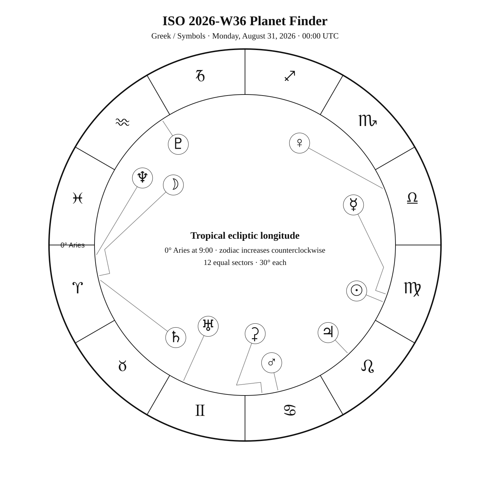
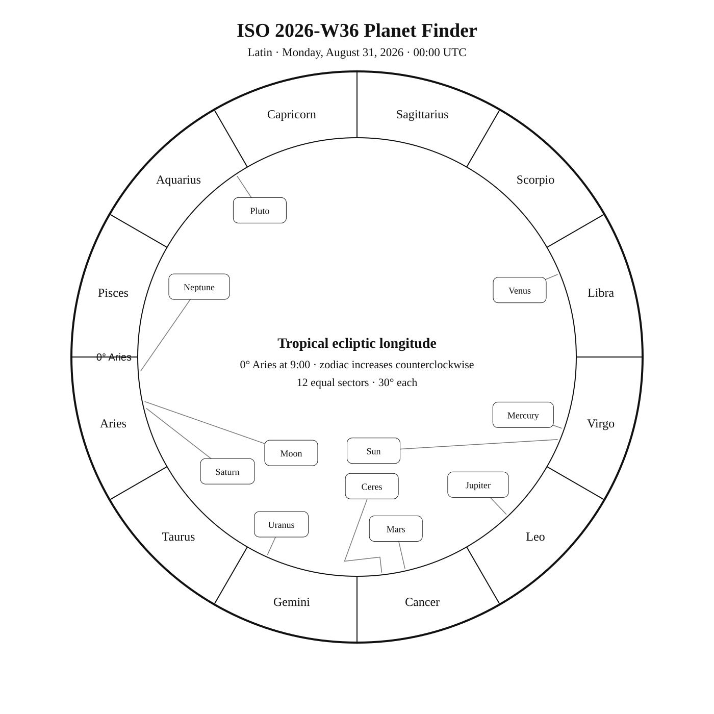
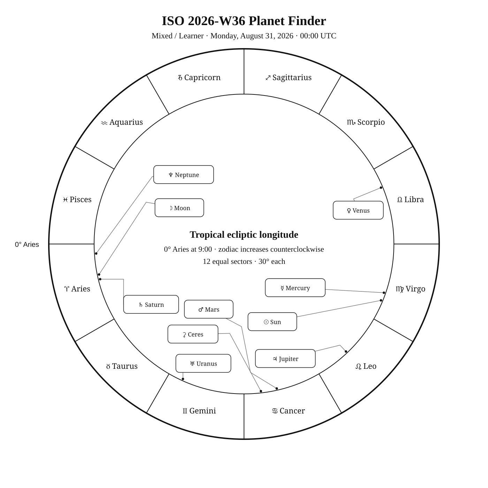

ISO 2026-W36
Week begins: Monday, August 31, 2026
Notation:
Calendar
| Date | Zodiac day | Events |
|---|---|---|
| Mon, Aug 31, 2026 | — | — |
| Tue, Sep 1, 2026 | — | — |
| Wed, Sep 2, 2026 | — | — |
| Thu, Sep 3, 2026 | — | — |
| Fri, Sep 4, 2026 | — | — |
| Sat, Sep 5, 2026 | — | — |
| Sun, Sep 6, 2026 | — | — |
Weekly Solar-System Ephemeris
Snapshot: August 31, 2026 · 00:00 UTC
(−90° to +90°; default +45°)
Notation:
| Body | ☉︎ | ☽︎ | ☿︎ | ♀︎ | ♂︎ | ♃︎ | ♄︎ |
|---|---|---|---|---|---|---|---|
| Ecliptic | ♍︎ 7°38′ β +0°00′ | ♈︎ 11°53′ β +3°32′ | ♍︎ 10°48′ β +1°38′ | ♎︎ 22°22′ β −3°16′ | ♋︎ 12°46′ β +0°31′ | ♌︎ 13°29′ β +0°32′ | ♈︎ 13°44′ β −2°39′ |
| Observing | ☉︎ |  | ☉︎ | | | | |
| Rise | 05:19 | 19:26 | 05:34 | 09:25 | 00:32 | 03:11 | 20:03 |
| Set | 18:41 | 08:36 | 18:55 | 19:57 | 16:05 | 17:44 | 08:32 |
Extended targets:
| Body | ⚳︎ | ♅︎ | ♆︎ | ♇︎ |
|---|---|---|---|---|
| Ecliptic | ♋︎ 6°33′ β −0°32′ | ♊︎ 5°39′ β −0°09′ | ♈︎ 3°41′ β −1°25′ | ♒︎ 3°32′ β −4°18′ |
| Observing |  |  | | |
| Rise | 00:08 | 22:04 | 19:35 | 17:30 |
| Set | 15:34 | 13:12 | 07:42 | 02:10 |
β = ecliptic latitude (+ north, − south). Rise and set are Local Apparent Time for the selected latitude. Naked-eye classification becomes Daylight when the Sun is above the horizon at 21:00 LAT, and Solar Glare when the Sun is below the horizon but the body is too close to the Sun. The Sun uses glyph ☉ and text Visible.
Notation:
Planet Finder



Sky Notes
Sky notes pending.